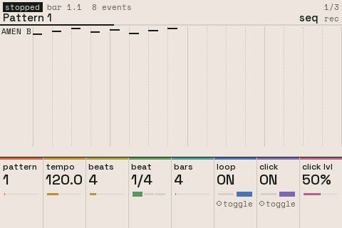
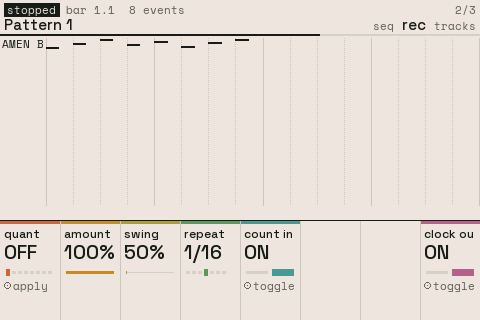
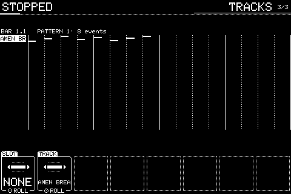
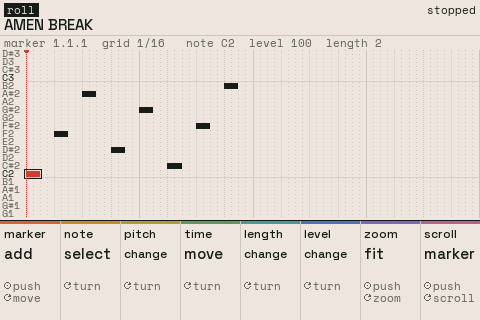
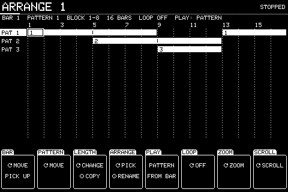

Chapter 6
Sequencer
6.1 SEQ
SEQ.

The pattern playing, its timing and the click. The middle shows the pattern's tracks. PREV and NEXT step SEQ's three pages; SEQ or MODE closes.
| Knob | Setting | Turn | Push |
|---|---|---|---|
| 1 | PATTERN | Which pattern plays and records | |
| 2 | TEMPO | 30 to 300 BPM; Shift for tenths | |
| 3 | BEATS | Beats in a bar, 1 to 16 | |
| 4 | BEAT | The beat's length: 1/4, 1/8 or 1/16 | |
| 5 | BARS | The pattern's length, 1 to 999 bars | |
| 6 | LOOP | Plays round again at the end | Toggles |
| 7 | CLICK | The metronome | Toggles |
| 8 | CLICK LVL | Its level |
Knobs not listed do nothing here. Shift + push puts most settings back to how a new one has them.
6.2 SEQ: REC
NEXT from SEQ.

How recording lands on the grid. REC and OVERDUB start recording; ERASE (held) removes notes as they pass; NOTE REPEAT (held) repeats a held pad on the grid.
Shift + REPEAT, held, is beat repeat: the main out loops its last slice, REPEAT's note value long, until you let go.
While recording, a red frame round the screen lights for the first half of each beat, and the status in the header turns red.
| Knob | Setting | Turn | Push |
|---|---|---|---|
| 1 | QUANTISE | The grid notes are pulled to as they're recorded, OFF to 1/32T | APPLY: moves every note in the pattern onto the grid, STRENGTH of the way (undoable) |
| 2 | STRENGTH | How far QUANTISE moves notes, 0 to 100% | |
| 3 | SWING | 50 to 75%: every second step that late | |
| 4 | REPEAT | NOTE REPEAT's rate, 1/4 to 1/32T; also beat repeat's slice (Shift + REPEAT) | |
| 5 | COUNT IN | A bar's count-in before recording from stopped | Toggles |
| 8 | CLOCK OUT | Sends MIDI clock while playing | Toggles |
Knobs not listed do nothing here. Shift + push puts most settings back to how a new one has them.
6.3 SEQ: TRACKS
NEXT from REC.

| Knob | Setting | Turn | Push |
|---|---|---|---|
| 1 | SLOT | Picks any slot, even one the pattern doesn't play yet | ROLL: opens its piano roll to put notes in |
| 2 | TRACK | Picks a row of the pattern | ROLL: opens its piano roll. Shift: DELETE removes it from the pattern (UNDO puts it back) |
Knobs not listed do nothing here. Shift + push puts most settings back to how a new one has them.
6.4 Piano roll
Push TRACK or SLOT on SEQ: TRACKS.

One slot's notes in the pattern, a key a row, for step editing. MODE goes back to SEQ.
| Knob | Setting | Turn | Push |
|---|---|---|---|
| 1 | MARKER | Moves the marker where a new note goes | ADD a note at the marker |
| 2 | NOTE | Picks a note | Shift + push deletes the picked note |
| 3 | PITCH | Moves the picked note up or down | |
| 4 | TIME | Moves the picked note in time, snapping to the grid showing | |
| 5 | LENGTH | Its length; Shift for finer | |
| 6 | LEVEL | Its velocity; Shift for finer | |
| 7 | ZOOM | Zooms in on the pattern | FIT |
| 8 | SCROLL | Moves the view | MARKER: follow the marker again |
Knobs not listed do nothing here. Shift + push puts most settings back to how a new one has them.
6.5 ARRANGE
Shift + SEQ.

An arrangement: a row per pattern, bars across, blocks where a pattern plays. PLAY in ARRANGE mode plays it. Arrangement edits have no undo.
| Knob | Setting | Turn | Push |
|---|---|---|---|
| 1 | BAR | Moves the cursor along the bars (carries a picked-up block) | PLACE a block of the pattern, or PICK UP the block under the cursor and DROP it. Shift + push removes it |
| 2 | PATTERN | Moves the cursor between rows | |
| 3 | LENGTH | The length of the block under the cursor | COPY the block |
| 4 | ARRANGE | Picks which arrangement | RENAME it |
| 5 | PLAY | What PLAY plays: the PATTERN or the ARRANGE-ment | FROM BAR: plays from the cursor's bar |
| 6 | LOOP | Loops the arrangement, ON or OFF | |
| 7 | ZOOM | Bars across the screen | |
| 8 | SCROLL | Moves the view |
Knobs not listed do nothing here. Shift + push puts most settings back to how a new one has them.